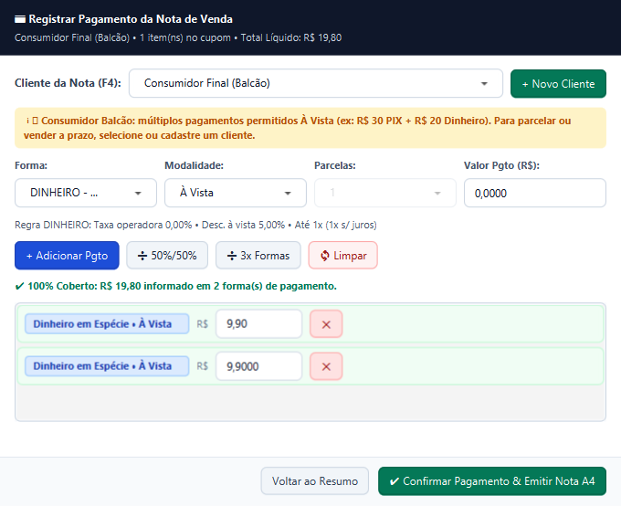

16/11/2026 · código 291d403 · complemento de formatação · ambiente separado com H2 em memória.
A aplicação abriu pelo novo lançador. Os nove menus foram acionados automaticamente: Home, PDV, estoque, financeiro, estatística, mapa, Kanban, IA e configurações. Resultado: 10 verificações de abertura e navegação aprovadas.
Foram cadastrados produto e fornecedor pelas rotas e emitida uma compra de 10 unidades a custo de R$ 5,00. O produto foi carregado no catálogo da tela PDV. O comando local adicionou 2 unidades ao cupom, com preço de venda de R$ 9,90 e total de R$ 19,80. A janela de múltiplos pagamentos abriu e o botão 50%/50% gerou dois campos de R$ 9,90. Resultado: 10 verificações aprovadas. A venda não foi emitida neste cenário visual.

Executadas em processos separados, cada um com seu próprio ambiente de teste, sem chaves de API. As contagens abaixo são as reportadas pelas próprias suítes.
| Suíte | Resultado | Duração |
|---|---|---|
| TesteEndpointsControllers | 85/85 | 29.7 s |
| TesteBandejaContexto | 64/64 | 25.7 s |
| TesteBandejaPassoAPasso | 71/71 | 32.1 s |
| TesteSimulacaoBandeja | 22/22 | 12.5 s |
| TesteParserEPreProcessador | 70/70 | 19.4 s |
| TesteFluxoPromptLongoEValidacao | 36/36 | 21.4 s |
| TesteImportadorCsvEReset | 17/17 | 15.3 s |
Na janela de pagamento, os campos editáveis mostram 9,90 e 9,9000 para as duas parcelas. O valor numérico está correto, mas a apresentação não está padronizada em duas casas decimais. O campo de valor restante também mostra 0,0000. O complemento preserva campos de entrada, portanto não corrige esse caso. Nenhum código original foi alterado.
Neste cenário, a forma inicialmente selecionada era Dinheiro; o botão 50%/50% gerou duas linhas de Dinheiro. A divisão foi testada, mas não uma combinação PIX + Dinheiro na interface nem a emissão final.
Apesar de reportar 85/85, a suíte de rotas registra funções e views MySQL ausentes no H2. Os controllers podem responder com sucesso usando alternativas ou resultados vazios. Portanto, o resultado da suíte não comprova relatórios completos, equivalência com MySQL ou homologação de todas as regras contábeis.
Não foram validados nesta rodada: IA com chave externa, voz, impressão física/A4, GPS, APIs climáticas reais ou todos os estados internos de cada aba. O teste visual de divisão não valida por si só o fechamento financeiro de uma venda com múltiplos pagamentos.
O conteúdo original foi conferido contra o snapshot do código: nenhuma alteração. Não foram usados seu banco de operação ou suas chaves, nem feitas publicações no GitHub.